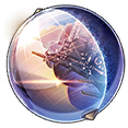

추천 광추
보답 없는 왕관
치피 +36% · 필살기 후 공격력
효과 자세히
필살기 → 공격력 +40% 2턴. 에너지 최대치 300 이상 → 에너지 10% 고정 회복·공격력 +40% 추가.
보이는 것이 곧 나
공격력 +18% · 회복효율 +10%
효과 자세히
필살기 에너지 1pt당 피해 +0.2%(최대 72%). 전투 시작과 필살기 사용 → 팀 치피 +24% 3턴.
어떤 에이언즈의 몰락
공격마다 공격력 +16%
효과 자세히
4스택 최대 +64%. 자신이 약점 격파 시 피해 +24% 2턴.
이와 같이 타오르는 여명
기초 속도 +12 · 방어력 무시 18%
효과 자세히
필살기 사용 후 자신의 다음 턴 시작 전까지 피해 +60%.
과거의 핏자국
치확 +20% · 스킬·필살기 피해 +40%
효과 자세히
피해 증가 대상은 전투 스킬과 필살기.
추천 유물
거친 파도를 헤치는 선장 4 · 우주 생명과학연구원 2
- 머리 주옵션HP부옵션치명타 확률 · 치명타 피해 · 속도 · 공격력%
- 손 주옵션공격력부옵션치명타 확률 · 치명타 피해 · 속도 · 공격력%
- 몸통 주옵션치명타 확률 / 치명타 피해부옵션치명타 확률 (주옵션 제외) · 치명타 피해 (주옵션 제외) · 속도 · 공격력%
- 다리 주옵션속도 / 공격력%부옵션치명타 확률 · 치명타 피해 · 속도 (주옵션 제외) · 공격력% (주옵션 제외)
- 구체 주옵션바람 속성 피해 / 공격력%부옵션치명타 확률 · 치명타 피해 · 속도 · 공격력% (주옵션 제외)
- 매듭 주옵션공격력%부옵션치명타 확률 · 치명타 피해 · 속도
이 조합을 추천하는 이유
선장 아군 스킬 목표 2회 → 필살기 시 공격력 +48%. 에너지 최대치 300 → 연구원 피해 +20%.
지식의 바다에 빠진 학자 4 · 회전을 멈춘 살소토 2
- 머리
 주옵션HP부옵션치명타 확률 · 치명타 피해 · 속도 · 공격력%
주옵션HP부옵션치명타 확률 · 치명타 피해 · 속도 · 공격력% - 손
 주옵션공격력부옵션치명타 확률 · 치명타 피해 · 속도 · 공격력%
주옵션공격력부옵션치명타 확률 · 치명타 피해 · 속도 · 공격력% - 몸통
 주옵션치명타 확률 / 치명타 피해부옵션치명타 확률 (주옵션 제외) · 치명타 피해 (주옵션 제외) · 속도 · 공격력%
주옵션치명타 확률 / 치명타 피해부옵션치명타 확률 (주옵션 제외) · 치명타 피해 (주옵션 제외) · 속도 · 공격력% - 다리
 주옵션속도 / 공격력%부옵션치명타 확률 · 치명타 피해 · 속도 (주옵션 제외) · 공격력% (주옵션 제외)
주옵션속도 / 공격력%부옵션치명타 확률 · 치명타 피해 · 속도 (주옵션 제외) · 공격력% (주옵션 제외) - 구체

주옵션바람 속성 피해 / 공격력%부옵션치명타 확률 · 치명타 피해 · 속도 · 공격력% (주옵션 제외) - 매듭
 주옵션공격력%부옵션치명타 확률 · 치명타 피해 · 속도
주옵션공격력%부옵션치명타 확률 · 치명타 피해 · 속도
이 조합을 추천하는 이유
학자 필살기 뒤 전투 스킬 보강. 살소토 치확 50% → 필살기 피해 +15%.
지식의 바다에 빠진 학자 4 · 우주 생명과학연구원 2
- 머리
주옵션HP부옵션치명타 확률 · 치명타 피해 · 속도 · 공격력%
- 손
주옵션공격력부옵션치명타 확률 · 치명타 피해 · 속도 · 공격력%
- 몸통
주옵션치명타 확률 / 치명타 피해부옵션치명타 확률 (주옵션 제외) · 치명타 피해 (주옵션 제외) · 속도 · 공격력%
- 다리
주옵션속도 / 공격력%부옵션치명타 확률 · 치명타 피해 · 속도 (주옵션 제외) · 공격력% (주옵션 제외)
- 구체 주옵션바람 속성 피해 / 공격력%부옵션치명타 확률 · 치명타 피해 · 속도 · 공격력% (주옵션 제외)
- 매듭 주옵션공격력%부옵션치명타 확률 · 치명타 피해 · 속도
이 조합을 추천하는 이유
학자가 필살기와 전투 스킬을 강화하고, 연구원은 세이버의 최대 에너지 조건으로 피해를 보강합니다.
거친 파도를 헤치는 선장 4 · 우주 생명과학연구원 2
- 머리 주옵션HP부옵션치명타 확률 · 치명타 피해 · 속도 · 공격력%
- 손 주옵션공격력부옵션치명타 확률 · 치명타 피해 · 속도 · 공격력%
- 몸통 주옵션치명타 확률 / 치명타 피해부옵션치명타 확률 (주옵션 제외) · 치명타 피해 (주옵션 제외) · 속도 · 공격력%
- 다리 주옵션속도부옵션치명타 확률 · 치명타 피해 · 공격력%
- 구체 주옵션바람 속성 피해 / 공격력%부옵션치명타 확률 · 치명타 피해 · 속도 · 공격력% (주옵션 제외)
- 매듭 주옵션공격력%부옵션치명타 확률 · 치명타 피해 · 속도
이 조합을 추천하는 이유
세이버 135, 선데이 134를 예시로 세이버의 행동 직후 선데이의 전투 스킬을 사용합니다.
이 정도면 잘 키웠다
선택한 세팅 기준 · —는 확인된 수치 없음
아군의 단일 대상 스킬을 받고 필살기를 강화합니다.
| 스탯 | 추천 스탯 | 준종결 | 종결 |
|---|---|---|---|
| 공격력 | 2200 | — | — |
| 속도 | 134+ | — | — |
| 치명타 확률 | 80%[1]특성 치명타 확률 20% 참고. | — | — |
| 치명타 피해 | 160% | — | — |
세팅 기준·출처
공개 가이드에서 이 세팅의 준종결 또는 종결 수치를 확인하지 못했습니다.
스탯 조건과 각주
- 치명타 확률 · 추천 스탯 특성 치명타 확률 20% 참고. ↑
필살기와 다음 전투 스킬을 보강합니다.
| 스탯 | 추천 스탯 | 준종결 | 종결 |
|---|---|---|---|
| 공격력 | 2200 | — | — |
| 속도 | 134+ | — | — |
| 치명타 확률 | 80%[1]특성 치명타 확률 20% 참고. | — | — |
| 치명타 피해 | 160% | — | — |
세팅 기준·출처
공개 가이드에서 이 세팅의 준종결 또는 종결 수치를 확인하지 못했습니다.
스탯 조건과 각주
- 치명타 확률 · 추천 스탯 특성 치명타 확률 20% 참고. ↑
- 종결 명함·전광
원본 종결의 명함·전용 광추 세팅입니다.
| 스탯 | 추천 스탯 | 준종결 | 종결 |
|---|---|---|---|
| 공격력 | 2200 | — | 2400 |
| 속도 | 134+ | — | — |
| 치명타 확률 | 80%[1]세이버 특성 치명타 확률 20% 참고. | — | 80% |
| 치명타 피해 | 160% | — | 220% |
세팅 기준·출처
종결은 명함·전용 광추·학자·우주 생명과학연구원 기준입니다. 공개 가이드에서 이 세팅의 준종결 수치를 확인하지 못했습니다.
스탯 조건과 각주
- 치명타 확률 · 추천 스탯 세이버 특성 치명타 확률 20% 참고. ↑
- 길가메시·선데이 편성
- 전투·비전투 혼합
길가메시 연계 추가 공격과 선데이 직전 운용을 함께 사용합니다.
| 스탯 | 추천 스탯 | 준종결 | 종결 |
|---|---|---|---|
| 공격력 | 2200 | — | 2500 |
| 속도 | 135[1]세이버 135 / 선데이 134 / 곽향 134+ 예시. | — | — |
| 치명타 확률 | 전투 80% | — | 전투 90%+ |
| 치명타 피해 | 비전투 160% | — | 비전투 200%+ |
세팅 기준·출처
영원한 주말의 별도 팀 편성 목표입니다. 치명타 확률은 특성·버프를 반영한 전투 중 수치이며 치명타 피해는 비전투 수치입니다. 공개 가이드에서 이 세팅의 준종결 수치를 확인하지 못했습니다.
스탯 조건과 각주
- 속도 · 추천 스탯 세이버 135 / 선데이 134 / 곽향 134+ 예시. ↑
성혼과 추천 돌파
1돌 필살기 피해 +60%와 노심 공명 · 2돌 방어력 무시와 스킬 배율 추가.
1필살기 피해 +60% · 공명 생성추천
일반 공격 또는 전투 스킬 사용 후 노심 공명 +1pt.
2노심 공명당 방어력 무시 1%추천
누적 최대 15스택. 강화 전투 스킬은 소모한 공명 1pt당 피해 배율 +7%p 추가.
3필살기 +2 · 일반 공격 +1
필살기·일반 공격 레벨 상한 각각 15·10.
4기본 바람 저항 관통 +8%
필살기 후 +4%씩 최대 3스택 추가.
5전투 스킬·특성 +2
스킬·특성 레벨 상한 각각 15.
6필살기 바람 저항 관통 +20%
초과 에너지 저장 한도 200pt. 첫 필살기 및 이후 3회마다 에너지 300pt 고정 회복.
추천 파티


기본 운영과 행적
노심 공명과 아군 필살기 맞추기
아군 필살기로 노심 공명 누적 → 전투 스킬로 에너지 수급 → 필살기·강화 일반 공격.
- 노심 공명을 소모해 에너지 최대치를 채울 수 있을 때 전투 스킬 강화. 승급 행적으로 초과 에너지 보존.
행적 육성 순서
필살기 → 전투 스킬 → 일반 공격·특성
아하 속도 계산기 →